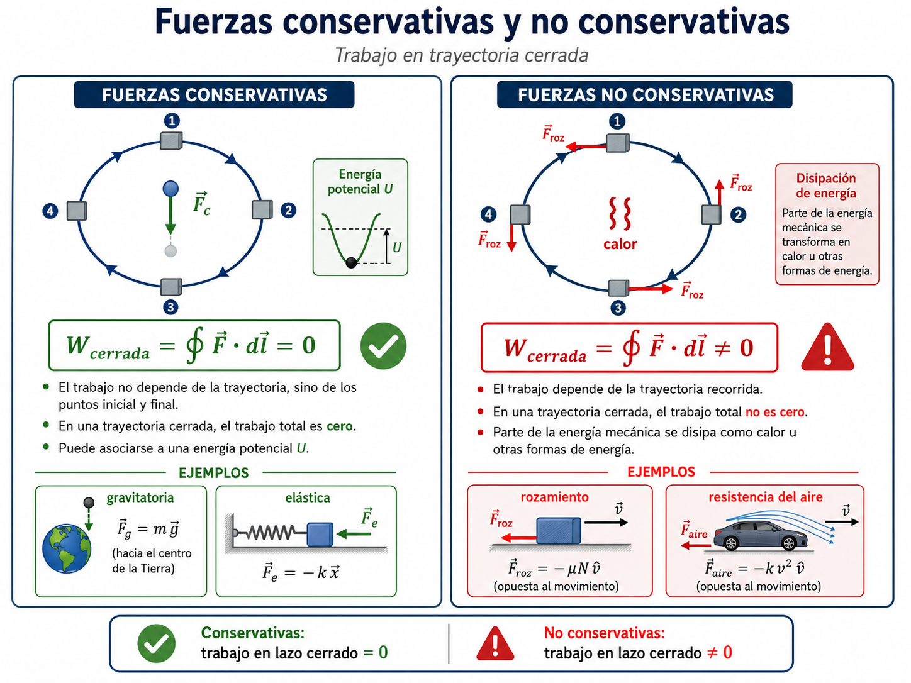

1. Introducción contextualizada
En la unidad anterior se estudió cómo las fuerzas modifican el movimiento. En esta unidad se introduce una herramienta complementaria: el análisis energético. En lugar de seguir instante a instante la aceleración, se estudia cómo el trabajo realizado por las fuerzas modifica la energía del sistema.
El trabajo mecánico permite conectar fuerza y desplazamiento; la energía cinética describe el estado de movimiento; la energía potencial describe energía asociada con posición o configuración. En conjunto, estos conceptos permiten analizar cintas transportadoras, elevadores, caída de producto, compresión de resortes, rozamiento, frenado, motores y eficiencia energética.
2. Objetivos de aprendizaje
Definir trabajo
Interpretar \(W=\vec F\cdot \Delta\vec r\) y reconocer trabajo positivo, negativo y nulo.
Relacionar trabajo y movimiento
Aplicar \(W_{\mathrm{neto}}=\Delta K\) para estudiar cambios de rapidez.
Analizar fuerzas específicas
Calcular el trabajo de peso, resorte, fuerza aplicada y rozamiento.
Distinguir fuerzas
Clasificar fuerzas conservativas y no conservativas según dependencia con la trayectoria.
Usar energía potencial
Aplicar \(U_g=mgy\) y \(U_e=\frac12kx^2\) en situaciones físicas e industriales.
3. Importancia técnica
El técnico en alimentos necesita estimar energía requerida para elevar cargas, mover productos, vencer rozamientos, comprimir resortes o frenar mecanismos. El análisis energético permite comparar alternativas de diseño y operación sin resolver todo el movimiento en detalle.
4. Mapa conceptual
5. Trabajo mecánico
En dinámica, el concepto de trabajo mecánico permite cuantificar cuánto contribuye una fuerza a modificar el estado energético de un cuerpo o sistema. No basta con que exista una fuerza: debe existir desplazamiento y, además, una componente de la fuerza debe estar alineada con ese desplazamiento.
5.1 Condiciones físicas para que exista trabajo
No alcanza con que una fuerza actúe sobre un cuerpo. Para que exista trabajo mecánico deben cumplirse simultáneamente tres condiciones: debe existir una fuerza, debe producirse desplazamiento y la fuerza debe tener una componente paralela a ese desplazamiento.
- Si hay fuerza pero no hay desplazamiento, el trabajo mecánico sobre el cuerpo es cero.
- Si hay desplazamiento pero la fuerza es perpendicular, el trabajo de esa fuerza es cero.
- Si la componente paralela de la fuerza acompaña el movimiento, el trabajo es positivo; si se opone, es negativo.
Esta distinción es importante en física aplicada: una persona puede fatigarse empujando una estructura inmóvil, pero desde el punto de vista mecánico no transfiere energía a esa estructura mediante trabajo.
5.2 Trabajo de una fuerza variable
Cuando la fuerza cambia con la posición, como ocurre en un resorte, no se usa un único valor de fuerza. El trabajo se calcula sumando trabajos elementales:
En una gráfica \(F_x\) versus \(x\), el trabajo corresponde al área algebraica bajo la curva. Las áreas sobre el eje se toman como trabajo positivo y las áreas bajo el eje como trabajo negativo.
Lectura vectorial
El producto escalar selecciona sólo la componente de la fuerza que actúa en la dirección del desplazamiento:
Por eso, una fuerza perpendicular al desplazamiento no realiza trabajo mecánico, aunque pueda cambiar la dirección del movimiento.
| Tipo de trabajo | Condición angular | Interpretación física | Ejemplo técnico |
|---|---|---|---|
| Positivo | \(0^\circ\le\theta<90^\circ\) | La fuerza aporta energía al movimiento. | Motor que acelera una cinta o empuja un producto. |
| Nulo | \(\theta=90^\circ\) o \(\Delta r=0\) | La fuerza no cambia la energía cinética asociada a ese desplazamiento. | Peso de un producto que se mueve horizontalmente. |
| Negativo | \(90^\circ<\theta\le180^\circ\) | La fuerza extrae energía mecánica o se opone al movimiento. | Rozamiento durante frenado o arrastre. |
Simulación 1: trabajo de una fuerza constante
Modificá fuerza, desplazamiento y ángulo para ver cómo cambia \(W=Fd\cos\theta\).
6. Energía cinética
La energía cinética es la energía asociada al movimiento. Para un cuerpo que puede modelarse como partícula, depende de su masa y de su rapidez, no de la dirección de su velocidad.
Depende de \(m\)
A igual rapidez, un cuerpo con mayor masa posee mayor energía cinética. Esto importa en carros, tolvas móviles, rodillos y cargas transportadas.
Depende de \(v^2\)
Si la rapidez se duplica, la energía cinética se cuadruplica. Por eso los impactos y frenados son muy sensibles a la velocidad.
No depende del sentido
Un cuerpo que se mueve hacia la derecha o hacia la izquierda con la misma rapidez tiene la misma energía cinética.
Relación con unidades
Esta equivalencia muestra que trabajo y energía tienen la misma unidad porque el trabajo es una transferencia de energía.
7. Teorema trabajo–energía
El vínculo central de esta unidad es el teorema trabajo–energía: el trabajo neto realizado sobre un cuerpo se manifiesta como variación de su energía cinética.
7.1 El trabajo como medio de variación de la energía cinética
El trabajo neto no es una energía almacenada, sino el mecanismo por el cual cambia la energía cinética del cuerpo. La relación central de la unidad puede leerse así:
- si \(W_{\mathrm{neto}}>0\), el cuerpo gana energía cinética y aumenta su rapidez;
- si \(W_{\mathrm{neto}}<0\), el cuerpo pierde energía cinética y disminuye su rapidez;
- si \(W_{\mathrm{neto}}=0\), la energía cinética no cambia, aunque puedan existir fuerzas actuando.
7.2 Forma general con fuerza variable
La forma general del teorema se escribe mediante el trabajo integral de la fuerza neta:
Esto permite analizar resortes, rampas con rozamiento, actuadores y mecanismos en los que la fuerza resultante no permanece constante.
Interpretación desde Newton
Para movimiento rectilíneo con fuerza neta constante:
Si el cuerpo se desplaza una distancia \(d\), entonces:
Usando la relación cinemática \(v_f^2-v_i^2=2ad\), se obtiene:
Simulación 2: trabajo neto y cambio de energía cinética
Elegí masa, rapidez inicial y trabajo neto. El simulador calcula energía cinética final y rapidez final.
8. Trabajo realizado por la fuerza peso
La fuerza peso \(\vec P=m\vec g\) apunta verticalmente hacia abajo. Por eso, su trabajo depende del cambio de altura y no del desplazamiento horizontal recorrido.
8.1 Desplazamiento horizontal
Si un producto se mueve horizontalmente sobre una cinta, el desplazamiento es perpendicular al peso. En ese caso:
El peso sigue actuando, pero no transfiere energía asociada a ese desplazamiento horizontal.
8.2 Desplazamiento vertical
Cuando el cuerpo sube o baja, el peso sí realiza trabajo:
8.2.1 Lectura energética de la subida y la bajada
Durante una subida, el peso realiza trabajo negativo porque se opone al desplazamiento vertical. Para elevar el producto se requiere que una fuerza externa, un motor o una cinta inclinada realice trabajo positivo. Durante una bajada ocurre lo contrario: el peso puede transformar energía potencial gravitatoria en energía cinética.
| Movimiento | Signo de \(\Delta y\) | Trabajo del peso | Interpretación |
|---|---|---|---|
| Subida | \(\Delta y>0\) | \(W_g<0\) | El peso se opone al movimiento. |
| Bajada | \(\Delta y<0\) | \(W_g>0\) | El peso favorece el movimiento. |
| Horizontal | \(\Delta y=0\) | \(W_g=0\) | No hay cambio de altura. |
8.3 Desplazamiento inclinado
En una rampa o transportador inclinado, el desplazamiento total puede ser grande, pero el trabajo del peso depende sólo del cambio de altura:
Esta propiedad anticipa el concepto de fuerza conservativa: para el peso, el trabajo entre dos alturas no depende de la trayectoria recorrida.
Simulación 3: trabajo del peso
Mové el punto final. El trabajo del peso cambia con \(\Delta y\), pero no con \(\Delta x\).
9. Trabajo realizado por un resorte
En un resorte ideal la fuerza no es constante: cambia linealmente con la deformación. Por eso el trabajo se obtiene como el área bajo la curva \(F(x)\) o mediante una integral.
9.1 Compresión, expansión y signo del trabajo
El signo del trabajo del resorte depende de si el resorte ayuda al movimiento hacia el equilibrio o si se opone a una deformación creciente.
Expansión hacia el equilibrio
Si \(|x_f|<|x_i|\), el resorte libera energía y realiza trabajo positivo sobre el cuerpo.
Compresión o estiramiento creciente
Si \(|x_f|>|x_i|\), el resorte se opone al movimiento y realiza trabajo negativo.
Trabajo externo
Para deformar lentamente el resorte, el trabajo externo aumenta la energía potencial elástica.
9.2 Interpretación por área
Como \(F_e=-kx\), la gráfica fuerza–posición es una recta. El trabajo desde \(0\) hasta \(x\) se asocia al área triangular:
Lectura de signos
- Si el resorte vuelve hacia el equilibrio, \(|x_f|<|x_i|\), el resorte realiza trabajo positivo sobre el cuerpo.
- Si el cuerpo comprime o estira más el resorte, \(|x_f|>|x_i|\), el trabajo realizado por el resorte es negativo.
- El trabajo externo necesario para deformarlo cuasiestáticamente tiene signo opuesto al trabajo hecho por el resorte.
Simulación 4: trabajo del resorte y energía potencial elástica
Elegí posición inicial y final. La gráfica muestra \(U_e=\frac12kx^2\); el trabajo del resorte es \(W_e=U_i-U_f\).
10. Trabajo de una fuerza aplicada y de la fuerza de roce
10.1 Fuerza aplicada
Una fuerza aplicada puede acelerar, frenar o no modificar la rapidez, según su dirección respecto del desplazamiento y según el balance con las demás fuerzas.
Fuerza alineada
Si \(\theta=0^\circ\), el trabajo es máximo y positivo: \(W=Fd\).
Fuerza inclinada
Sólo la componente paralela \(F\cos\theta\) realiza trabajo sobre el desplazamiento.
Fuerza opuesta
Si \(\theta=180^\circ\), el trabajo es negativo: \(W=-Fd\).
10.2 Fuerza de roce
El roce cinético se opone al movimiento relativo entre superficies. En una superficie horizontal, si \(N=mg\):
10.2.1 Consecuencia energética del roce
El trabajo de la fuerza de roce suele ser negativo para el cuerpo que desliza. La energía mecánica que desaparece de la descripción macroscópica se transforma principalmente en energía interna de las superficies, aumento de temperatura, ruido, vibraciones y desgaste.
El signo negativo representa que el roce extrae energía mecánica. Esa energía no desaparece: aparece como energía interna, aumento de temperatura, desgaste, vibración o sonido.
Simulación 5: fuerza aplicada, roce y trabajo neto
Modelo de bloque sobre superficie horizontal con fuerza aplicada inclinada.
Estado energético: aumenta K
11. Fuerzas conservativas y no conservativas
Esta clasificación permite decidir si el trabajo de una fuerza puede representarse mediante energía potencial o si debe tratarse como una transferencia que modifica la energía mecánica total.
11.1 Fuerzas conservativas
Una fuerza es conservativa si el trabajo que realiza entre dos posiciones no depende de la trayectoria, sino sólo de los puntos inicial y final. En una trayectoria cerrada, el trabajo total de una fuerza conservativa es cero:
Para una fuerza conservativa se puede definir una energía potencial \(U\), de manera que el trabajo realizado por esa fuerza se expresa como:
11.1.1 Consecuencia práctica
Si la fuerza es conservativa, se puede resolver el problema comparando estados inicial y final, sin conocer todos los detalles intermedios del camino. Esto simplifica el análisis de caídas, elevaciones y resortes ideales.
11.2 Fuerzas no conservativas
Una fuerza es no conservativa si su trabajo depende del camino o del modo en que ocurre el proceso. El roce cinético es el ejemplo más importante: a mayor recorrido, mayor energía mecánica disipada.
En sistemas reales, estas fuerzas son centrales para estimar pérdidas, calentamiento, consumo energético y eficiencia.
| Tipo de fuerza | Ejemplos | Trabajo | Relación con energía |
|---|---|---|---|
| Conservativa | Peso, fuerza elástica ideal | No depende de la trayectoria. | Puede asociarse a una energía potencial. |
| No conservativa | Rozamiento cinético, resistencia del aire, fuerzas aplicadas por motores o personas | Depende de la trayectoria, del proceso o de la interacción externa. | Puede modificar la energía mecánica total. |
Simulación 6: trayectoria y trabajo
Compará el trabajo del peso y del roce para dos trayectorias con el mismo cambio de altura.

Lectura didáctica sugerida: usar esta imagen como síntesis final del punto 11 y como transición hacia el concepto de energía potencial, que sólo puede definirse de manera directa para fuerzas conservativas.
12. Energía potencial
La energía potencial es energía asociada a la posición o configuración de un sistema cuando intervienen fuerzas conservativas. No pertenece a un cuerpo aislado: pertenece al sistema de interacción, por ejemplo cuerpo–Tierra o masa–resorte.
12.1 Definición desde el trabajo conservativo
La energía potencial se define para que el trabajo de la fuerza conservativa sea el opuesto de la variación de dicha energía:
Cuando la fuerza conservativa realiza trabajo positivo, la energía potencial disminuye. Cuando realiza trabajo negativo, la energía potencial aumenta.
12.1 Energía potencial gravitatoria
Cerca de la superficie terrestre, si se toma un nivel de referencia \(y=0\), la energía potencial gravitatoria se expresa como:
El valor de \(U_g\) depende del nivel de referencia elegido. En cambio, la variación \(\Delta U_g\) tiene significado físico directo porque se relaciona con el trabajo del peso.
Su variación depende del cambio de altura:
12.2 Energía potencial elástica
En un resorte ideal, la energía almacenada depende del cuadrado de la deformación:
La energía potencial elástica es siempre positiva o nula porque depende de \(x^2\). Por eso, tanto una compresión como un estiramiento almacenan energía en el sistema elástico.
| Tipo de energía potencial | Expresión | Variable relevante | Observación |
|---|---|---|---|
| Gravitatoria | \(U_g=mgy\) | Altura \(y\) | Depende del nivel de referencia elegido. |
| Elástica | \(U_e=\frac{1}{2}kx^2\) | Deformación \(x\) | Es positiva tanto en compresión como en estiramiento. |
13. Energía mecánica y trabajo de fuerzas no conservativas
La energía mecánica es la suma de energía cinética y energía potencial:
Esta sección reúne los conceptos previos para resolver problemas donde se transforman energía cinética, energía potencial gravitatoria y energía potencial elástica.
Si sólo realizan trabajo fuerzas conservativas, la energía mecánica se conserva:
Si actúan fuerzas no conservativas, su trabajo modifica la energía mecánica:
13.1 Balance energético con pérdidas
Cuando hay rozamiento, resistencia del aire, deformaciones internas o pérdidas en transmisiones mecánicas, la energía mecánica no se conserva. El término \(W_{\mathrm{nc}}\) permite cuantificar cuánto aportan o extraen esas interacciones.
En muchos sistemas reales, \(W_{\mathrm{nc}}<0\) porque el roce, la resistencia del aire o las pérdidas internas convierten energía mecánica en energía interna. En cambio, un motor o actuador puede aportar trabajo externo positivo al sistema.
14. Potencia, rendimiento y eficiencia energética
La potencia mide la rapidez con que se transfiere o transforma energía. Dos equipos pueden realizar el mismo trabajo, pero el de mayor potencia lo hace en menor tiempo.
Si una fuerza constante actúa en la dirección del movimiento, la potencia instantánea puede escribirse como:
14.1 Rendimiento
En máquinas reales, no toda la energía entregada se convierte en energía útil. Una parte se disipa por rozamiento, calentamiento, vibración, ruido o pérdidas eléctricas.
14.1.1 Lectura técnica del rendimiento
Una potencia elevada no garantiza eficiencia. Un sistema puede consumir mucha potencia y entregar poca energía útil si existen pérdidas por desalineación, roce excesivo, mala lubricación, transmisión inadecuada o operación fuera del punto de diseño.
15. Centro de masa, energía cinética y choques
Este apartado conecta el análisis energético con la cantidad de movimiento lineal. Permite estudiar impactos, contactos entre envases, acumulación de productos y choques contra topes o guías mecánicas.
15.1 Energía cinética y sistema del centro de masa
La energía cinética total de un sistema puede separarse en dos partes: la energía asociada al movimiento del centro de masa y la energía cinética relativa de las partículas medidas desde el centro de masa.
En un choque aislado, la cantidad de movimiento total se conserva siempre. Lo que distingue los tipos de choque es qué ocurre con \(K_{\mathrm{rel}}\), es decir, con la energía cinética asociada al movimiento relativo entre los cuerpos.
15.2 Tipos de choque
| Tipo de choque | Momento lineal | Energía cinética | Velocidad del centro de masa | Coeficiente de restitución |
|---|---|---|---|---|
| Elástico | Se conserva. | Se conserva la energía cinética total: \(K_i=K_f\). | Permanece constante si no hay impulso externo neto. | \(e=1\) |
| Inelástico | Se conserva si el sistema está aislado. | No se conserva completamente: parte de la energía cinética se transforma en deformación, calor, sonido o vibraciones. | Permanece constante si no hay impulso externo neto. | \(0<e<1\) |
| Plástico o perfectamente inelástico | Se conserva si el sistema está aislado. | La pérdida de energía cinética es máxima compatible con la conservación del momento. | Permanece constante; los cuerpos quedan con una velocidad común igual a \(V_{\mathrm{CM}}\). | \(e=0\) |
15.3 Choques unidimensionales: ecuaciones básicas
Para dos cuerpos que chocan sobre una misma línea, la conservación del momento lineal se escribe:
El coeficiente de restitución relaciona la rapidez relativa de separación con la rapidez relativa de aproximación:
En un choque elástico se agrega la conservación de energía cinética:
En un choque plástico, ambos cuerpos terminan con una velocidad común:
La energía cinética perdida en un choque plástico unidimensional puede expresarse mediante la masa reducida \(\mu\):
15.4 Interpretación aplicada a procesos alimentarios
En líneas de transporte, acumuladores, envasadoras, clasificadoras y guías mecánicas, los productos pueden interactuar entre sí o con topes. La conservación del momento permite estimar velocidades posteriores al contacto. La energía perdida permite estimar deformación, ruido, vibración, daño del envase o riesgo de derrame.
Choque elástico ideal
Sirve como modelo límite. Es útil para comparar, aunque en envases reales siempre hay alguna deformación y disipación.
Choque inelástico real
Representa mejor impactos entre envases, cajas, frutas o productos blandos: se conserva aproximadamente el momento, pero se pierde parte de la energía cinética.
Choque plástico
Modelo de cuerpos que quedan unidos, trabados o avanzan juntos después del impacto. Es útil para estimar la velocidad común posterior.
Ejemplo conceptual: envases sobre una cinta
Dos envases se desplazan sobre una cinta. Si el tiempo de choque es muy corto y el rozamiento externo durante ese intervalo puede despreciarse, el momento lineal del par de envases se conserva durante el impacto. Si luego ambos quedan juntos, se modela como choque plástico y la velocidad posterior se calcula con \(v_f=V_{\mathrm{CM}}\).
16. Aplicaciones industriales alimentarias
Cintas transportadoras
El trabajo de motores, peso y rozamiento permite estimar aceleración, consumo y energía necesaria para mover cargas.
Elevadores y tornillos
El aumento de altura implica incremento de energía potencial gravitatoria y demanda de potencia.
Resortes y soportes
La energía potencial elástica aparece en apoyos, tensores, mecanismos de retorno y elementos de absorción de impacto.
Frenado y desgaste
El trabajo negativo del roce se traduce en calentamiento, desgaste de superficies y reducción de energía mecánica.
Molinos y mezcladores
Aunque aquí se enfatiza el movimiento traslacional, el concepto de trabajo se extiende a rotación mediante torque y desplazamiento angular.
Eficiencia energética
El control de pérdidas mecánicas permite mejorar rendimiento, seguridad, costos y estabilidad del proceso.
17. Ejemplos resueltos paso a paso
Ejemplo 1: trabajo de una fuerza aplicada
Una fuerza de \(40\,\mathrm{N}\) arrastra una caja durante \(5{,}0\,\mathrm{m}\) con un ángulo de \(30^\circ\).
Ejemplo 2: trabajo del peso en una elevación
Un envase de \(2{,}0\,\mathrm{kg}\) se eleva \(1{,}5\,\mathrm{m}\).
Ejemplo 3: resorte comprimido
Un resorte de \(k=200\,\mathrm{N/m}\) se comprime desde \(x_i=0\) hasta \(x_f=-0{,}10\,\mathrm{m}\).
Ejemplo 4: roce en una mesa horizontal
Una caja se desplaza \(4{,}0\,\mathrm{m}\) sobre una mesa con \(\mu_k=0{,}25\), \(m=10\,\mathrm{kg}\).
18. Simuladores incluidos
- Trabajo de una fuerza constante.
- Trabajo neto y energía cinética.
- Trabajo realizado por la fuerza peso.
- Trabajo de un resorte y energía potencial elástica.
- Fuerza aplicada, roce y trabajo neto.
- Comparación entre fuerza conservativa y fuerza no conservativa.
Los simuladores permiten modificar parámetros y observar de manera gráfica cómo cambian el trabajo, la energía cinética, la energía potencial y la energía mecánica.
19. Errores frecuentes
Confundir fuerza con trabajo
Puede existir fuerza sin trabajo si no hay desplazamiento o si la fuerza es perpendicular al desplazamiento.
Olvidar el signo
El signo del trabajo indica si una fuerza aporta o extrae energía mecánica.
Usar distancia en vez de desplazamiento
Para una fuerza constante se usa el desplazamiento y el ángulo con la fuerza; para rozamiento interesa el recorrido.
Creer que toda fuerza tiene energía potencial
Sólo las fuerzas conservativas admiten una función de energía potencial asociada.
Asignar \(U_g\) al cuerpo solo
La energía potencial gravitatoria pertenece al sistema cuerpo–Tierra.
Ignorar pérdidas
En equipos reales, parte de la energía se disipa por roce, vibración, calor y sonido.
20. Preguntas conceptuales
- ¿Puede una fuerza muy grande realizar trabajo nulo? Dar un ejemplo.
- ¿Por qué el peso no realiza trabajo cuando un producto se mueve horizontalmente?
- ¿Qué significa físicamente que el trabajo neto sea negativo?
- ¿Por qué la energía cinética depende de \(v^2\) y no de \(v\)?
- ¿Qué diferencia hay entre trabajo del resorte y trabajo externo para comprimirlo?
- ¿Por qué el rozamiento cinético es una fuerza no conservativa?
- ¿Qué nivel de referencia conviene elegir para \(U_g\) en un problema de elevación?
- ¿Qué información técnica aporta la potencia además del trabajo total?
21. Ejercicios numéricos propuestos
- Una fuerza de \(30\,\mathrm{N}\) actúa durante \(6\,\mathrm{m}\) con \(\theta=20^\circ\). Calcular el trabajo.
- Un cuerpo de \(4\,\mathrm{kg}\) aumenta su rapidez de \(2\,\mathrm{m/s}\) a \(7\,\mathrm{m/s}\). Calcular el trabajo neto.
- Un envase de \(1{,}5\,\mathrm{kg}\) se eleva \(2{,}2\,\mathrm{m}\). Calcular \(W_g\) y \(\Delta U_g\).
- Un resorte de \(k=150\,\mathrm{N/m}\) pasa de \(x_i=0{,}12\,\mathrm{m}\) a \(x_f=0{,}04\,\mathrm{m}\). Calcular el trabajo del resorte.
- Una caja de \(8\,\mathrm{kg}\) se desplaza \(5\,\mathrm{m}\) con \(\mu_k=0{,}30\). Calcular el trabajo del roce.
- Un motor entrega \(1200\,\mathrm{J}\) en \(4\,\mathrm{s}\). Calcular la potencia promedio.
- Un equipo recibe \(2{,}0\,\mathrm{kW}\) y entrega \(1{,}5\,\mathrm{kW}\) útiles. Calcular el rendimiento.
22. Actividad práctica o simulada
Consigna. Modelar una cinta o elevador simple que transporta un producto entre dos puntos. El estudiante debe estimar trabajo de fuerza aplicada, trabajo del peso, trabajo del roce, variación de energía cinética y potencia requerida.
- Definir sistema, datos y supuestos.
- Indicar fuerzas conservativas y no conservativas.
- Calcular \(W_g\), \(W_{\mathrm{roce}}\), \(W_{\mathrm{aplicada}}\) y \(W_{\mathrm{neto}}\).
- Comparar \(W_{\mathrm{neto}}\) con \(\Delta K\).
- Estimar potencia media para un tiempo de operación dado.
- Interpretar qué pérdidas podrían reducir el rendimiento real.
23. Resumen final
- El trabajo mide transferencia de energía por una fuerza durante un desplazamiento.
- La energía cinética depende de \(m\) y de \(v^2\).
- El trabajo neto es igual a la variación de energía cinética.
- El peso sólo realiza trabajo si cambia la altura.
- El resorte almacena energía potencial elástica cuando se deforma.
- El roce realiza trabajo negativo y disipa energía mecánica.
- Las fuerzas conservativas permiten definir energía potencial.
- La potencia mide la rapidez con que se realiza trabajo o se transfiere energía.
24. Glosario breve
| Término | Significado |
|---|---|
| Trabajo | Transferencia de energía asociada a una fuerza que actúa durante un desplazamiento. |
| Joule | Unidad SI de trabajo y energía: \(1\,\mathrm{J}=1\,\mathrm{N\,m}\). |
| Energía cinética | Energía asociada al movimiento. |
| Trabajo neto | Suma de los trabajos realizados por todas las fuerzas que actúan sobre el cuerpo. |
| Fuerza conservativa | Fuerza cuyo trabajo no depende de la trayectoria. |
| Fuerza no conservativa | Fuerza cuyo trabajo depende del recorrido o del proceso. |
| Energía potencial | Energía asociada a la posición o configuración de un sistema. |
| Energía mecánica | Suma \(E_m=K+U\). |
| Potencia | Rapidez de transferencia de energía o realización de trabajo. |
| Rendimiento | Relación entre energía útil y energía entrante. |
25. Créditos y uso del material
Este apunte fue elaborado por el Prof. Víctor Javier Koziura como material didáctico complementario para la asignatura Física Aplicada a la Tecnología de Alimentos.
El material se apoya en la bibliografía recomendada por la cátedra y en textos universitarios de Física. Está destinado a acompañar el estudio, la resolución de problemas, el trabajo con simuladores y la discusión de aplicaciones en procesos alimentarios.